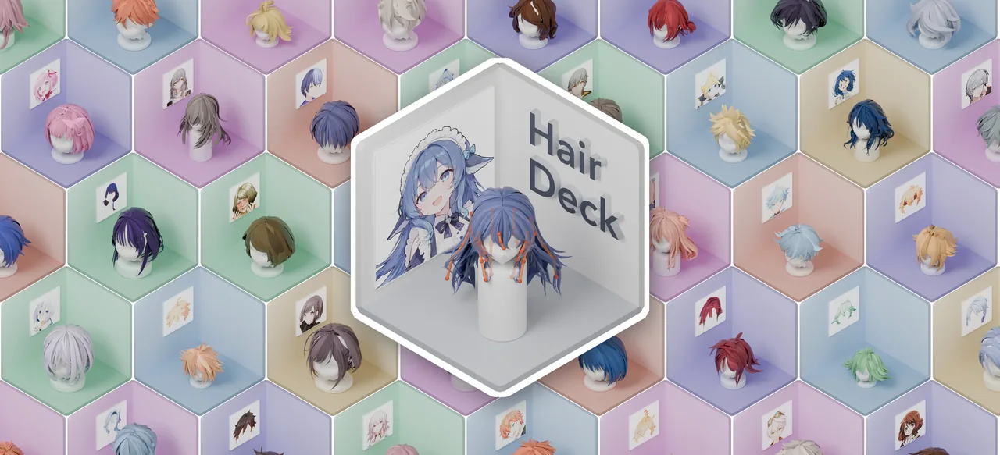
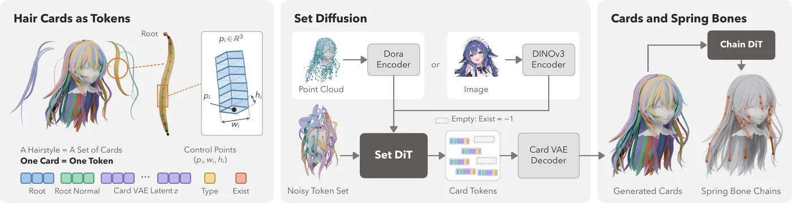
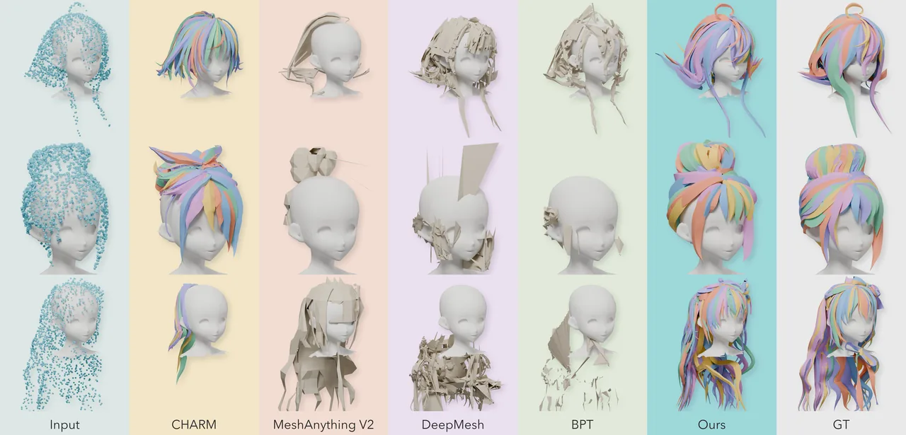
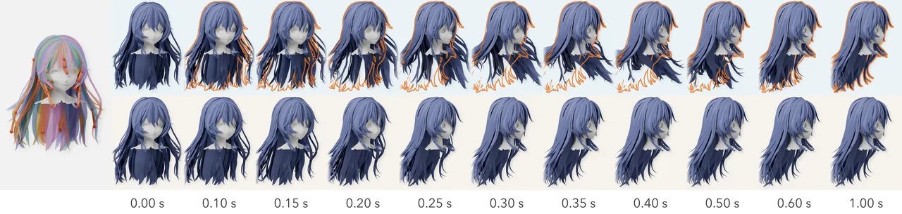
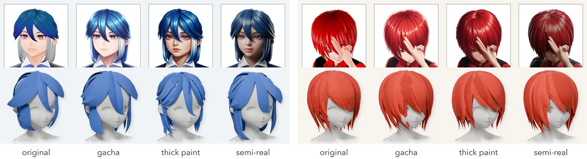
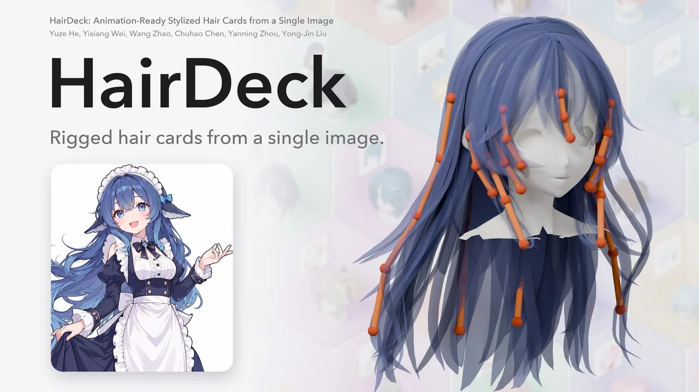

assets/teaser.jpg）：每个格子是“输入插画 + 生成的发片发型”。它是什么
- 要解决的问题：风格化角色（动漫、手游、VTuber 形象）的头发由“发片”构成——美术师手工摆放的一条条带状面片，几何本身就是看到的头发，再用弹簧骨骼（spring bones）驱动摆动。论文摘要指出，现有基于图像的方法要么生成写实发丝，要么生成一整块融合的网格；而此前唯一能生成风格化发片的方法 CHARM，是把发型当成一长串控制点自回归地逐个吐出来。
- HairDeck 的回答：发型是一组无序的、美术意义上的基本单元，所以应该“作为一个集合整体生成”——每片发片压成一个 token，集合扩散 Transformer 对所有发片同时去噪。
- 产出：独立的发片（不是融成一块）、每片自带 UV 坐标与发色；一组弹簧骨骼链，经几何蒙皮绑到发片上；可导出
.glb（带或不带头部代理），也可接到自带的角色身体上导出 VRM 0.x 角色，并渲染一段转头预览视频。 - 条件输入：图像（主用途：单张角色图）或点云（用于和 CHARM 在其测试集上对比）。
- 发布方：何宇泽、魏一翔（共同一作）、赵望、陈楚皓、周燕宁、刘永进（后两位为通讯作者）；单位为清华大学、卡内基梅隆大学、香港中文大学。论文 2026-10-29 上 arXiv（27 页、23 幅图），GitHub 仓库 2026-10-30 01:16（UTC+8）创建；截至 2026-11-01 凌晨（UTC+8）约 232 星。
怎么工作：一片发片，一个 token

assets/method.png）。左：发片 token 的组成；中：以图像（DINOv3）或点云（Dora）为条件的集合扩散；右：第二个 Transformer 生成弹簧骨骼链。- 一片发片 = 一个 token。一个紧凑的 token 记录这片发片的几何（经 Card VAE 编码的潜变量）、根部位置与朝向；流程图里还能看到“类型”和“存在位”两个字段——存在位为 −1 表示这个槽位是空的，所以模型可以生成数量不定的发片。
- 整组一起生成。集合扩散 Transformer（Set DiT）以图像或点云为条件，对所有发片 token 联合去噪；不像自回归那样有先后顺序，也就不会出现“越往后越乱”的长序列问题（⚠️ 推断：这是我们对“集合 vs. 自回归”的通俗理解，原文的说法是发型本身就是无序集合）。
- 让它动起来。第二个 Transformer（Chain DiT，README 称 chain diffusion model）根据生成的发片生成弹簧骨骼链，再用几何蒙皮把发片绑上去，最后借 Blender 4.2 + VRM Add-on 导出 VRM。
预处理一端用了 SAM 3（分割）、BiRefNet（抠图）和 DINOv3（图像编码），点云一端用 Dora-VAE 的编码器。
结果与数字
项目页给出的点云基准（在 CHARM 自己的 100 个测试发型上对比 CHARM）：
| 指标 | CHARM | HairDeck | 变化 |
|---|---|---|---|
| Chamfer 距离（越低越好） | 0.0117 | 0.0066 | 低 44% |
| 发片朝向误差 | 40.0° | 16.8° | 降到一半以下 |
| 发片生成耗时（不含网格化） | 33.7 s | 1.01 s | 快约 33 倍 |
我们按表中数字复算：(0.0117 − 0.0066) / 0.0117 ≈ 43.6%，33.7 / 1.01 ≈ 33.4，与“44%”“33 倍”的写法一致。以上全部是作者自报 ⚠️，本站没有复现。单图条件下，摘要称 HairDeck 优于 CHARM、图像转 3D 流程和基于发丝（strand）的方法，具体数字在论文里，本页未逐项核对 ⚠️。

assets/cmp_pc.jpg）：CHARM、HairDeck 与真值按发片逐片着色；通用网格生成方法（MeshAnything V2、DeepMesh、BPT）给出的是破碎的整块网格。
assets/spring.jpg）：上行带生成的弹簧骨骼，下行没有；上行的橙色描边是同一帧“没有骨骼时”的头发轮廓。
assets/supp_style.jpg）。展示用发色从输入图采样。怎么跑起来
- 环境门槛：Linux x86-64、Python 3.12、一张 NVIDIA CUDA 显卡；作者用 PyTorch 2.8 + CUDA 12.8 测试。预览视频要
ffmpeg。显存要求 README 没写 ⚠️。 - 权重：放在 Hugging Face
hyz317/HairDeck。SAM 3 与 DINOv3 是“门控”模型，要先到各自页面接受许可条款，再hf auth login；下载脚本会顺带装好 Blender 4.2 LTS 和 VRM Add-on（默认 Linux 版）。作者自己的简体中文 README 补了一句“国内可考虑从 ModelScope 下载”（英文版没有这句）。 - 最短路径：
python scripts/image_to_hair.py character.png --out results/my_character --n 4生成 4 个候选；python -m hairdeck.vrm.export results/my_character/character 0把第 0 个导出成 VRM 并渲染转头视频。--no-chains只要发片、不要骨骼。 - 不想装：直接用 Hugging Face 在线演示，或本地
python demo/app.py --port 7860起 Gradio 式界面（⚠️ 界面框架为推断）。 - 训练：从 CHARM 数据集和角色 VRM 文件开始，依次训 Card VAE → 点云 DiT → 图像 DiT → 骨骼链 DiT。注意：已发布的图像模型训练时用了一批“风格化重渲染图像”，这批数据不在本次发布里，所以从零复训未必能完全复现发布的图像模型。
完整命令见下文附录一。本站没有下载权重或实跑（需要 GPU、权重体积大），也没有实测在线演示 ⚠️。
许可与第三方依赖
- HairDeck 本身：代码与权重 Apache-2.0（仓库 LICENSE 为标准 Apache 2.0 全文；HF 模型卡元数据也标
license: apache-2.0）。可商用、可修改，需保留许可与声明。 - 第三方各守各的许可（README 原话：“Third-party models, code and datasets retain their respective licences”）：
- CHARM 数据集：Hugging Face 上标 GPL-3.0——用于训练时要留意，和 HairDeck 的 Apache-2.0 不同。
- SAM 3、DINOv3：Meta 的门控模型，需先接受各自的许可条款；商用与否要看那两份条款，本页未逐条核 ⚠️。
- Dora-VAE、BiRefNet、Blender（GPL）、VRM Add-on：各自许可，本页未逐条核 ⚠️。
- 你的输入图：拿别人画的角色图生成发型再商用，插画本身的著作权与角色 IP 问题不因模型是 Apache-2.0 而消失（⚠️ 一般性提醒，非法律意见）。
核实与注记
- ✅ 许可：仓库
LICENSE为 Apache License 2.0 全文；README 写“代码与权重 Apache-2.0”；HF 模型卡license: apache-2.0（核 2026-11-01）。 - ⚠️ 作者中文姓名（何宇泽、魏一翔、赵望、陈楚皓、周燕宁、刘永进）是本站按拼音推定的写法，README、论文与项目页只有英文名（Yuze He、Yixiang Wei、Wang Zhao、Chuhao Chen、Yanning Zhou、Yong-Jin Liu），以英文为准。
- ✅ 论文：arXiv 2610.40599 标题、六位作者与摘要和 README 一致，2026-10-29 提交，27 页 23 图（核 2026-11-01）。
- ✅ 仓库：2026-10-30 凌晨（UTC+8）创建，最新提交
07a7370（2026-10-31 23:17 UTC+8）；约 232 星（GitHub 仓库页，2026-11-01 凌晨 UTC+8）。星数会变。 - ⚠️ 自报：44%、16.8°、33 倍等全部来自作者论文/项目页，本站只做了算术复核，没有复现。
- ⚠️ 利益相关：对比的主要基线 CHARM 也出自同一团队（CHARM 论文一作同为何宇泽，周燕宁、赵望、刘永进也在作者列表），而且基准用的是 CHARM 自己的测试集——这是“新方法 vs. 自家旧方法”，不是第三方评测。
- ⚠️ 未实跑：本站没下载权重、没跑 Space 演示；显存需求、单图生成耗时（项目页的 1.01 s 只是点云条件下“网格化之前”的发片生成时间）未知。
- ⚠️ 复现缺口：发布的图像模型用到的风格化重渲染图像池未公开（README 原文明说）。
- ⚠️ 推广：本页无商业推广；仓库与项目页是作者团队的学术宣传，素材均为作者精选结果（cherry-pick 可能性未知）。
- ⚠️ 演示视频与插画：项目演示视频未转载，本页只用了海报帧与几张结果图；图中输入插画的作者/来源原页面未注明 ❓。

assets/video-poster.jpg）；视频本身未下载、未转载，可在项目页观看。附录一：README 全文中译
据仓库提交 07a7370 的英文 README.md 翻译（Apache-2.0）。作者另有官方简体中文 README，措辞与本译稍有不同，以英文原文为准。徽章、语言切换行与视频播放器从略。
HairDeck：从单张图像生成可直接用于动画的风格化发片
何宇泽1,* · 魏一翔1,* · 赵望1 · 陈楚皓2 · 周燕宁3,† · 刘永进1,†
1清华大学 2卡内基梅隆大学 3香港中文大学 · *同等贡献 †通讯作者
链接：项目页 · arXiv: 2610.40599 · Hugging Face 模型权重 · 在线演示 · 视频
视频
（README 此处嵌入演示视频，本页未转载。）
概述
HairDeck 从单张图像生成风格化发片，以及驱动这些发片的弹簧骨骼链。每片发片用一个 token 表示，由一个集合扩散 Transformer 联合生成所有发片。生成的发型可以导出为 GLB 网格，也可以挂到角色身上导出为 VRM。
- 发片作为集合。Card VAE 编码每一片发片，条件集合扩散把发型作为一个整体生成。
- 带 UV 的几何。输出保留每一片独立的发片，并为每片提供 UV 坐标。
- 弹簧骨骼动画。一个链式扩散模型生成驱动发片的骨骼，并完成蒙皮与 VRM 导出。
（此处为方法总览图：发片 token、以图像或点云为条件的集合扩散、生成的发片与弹簧骨骼链。见正文第二节。）
开始使用
🛠️ 安装 · 🤗 模型权重 · 🚀 快速上手 · 🖼️ 本地演示 · 📦 输出 · 📊 评估 · 🏋️ 训练 · 📝 引用
🛠️ 安装
请使用 Linux x86-64、Python 3.12 和一张 NVIDIA CUDA 显卡。本次发布在 PyTorch 2.8 与 CUDA 12.8 下测试。视频预览还需要 PATH 中有 ffmpeg。
git clone https://github.com/hyz317/HairDeck.git
cd HairDeck
python -m pip install -r requirements.txt
python -m pip install --no-deps pyrender==0.1.45 # 不带它那条老旧的 PyOpenGL 版本锁以下命令都在仓库根目录、同一个 Python 环境中运行。
🤗 模型权重
我们的检查点和配套资源托管在 hyz317/HairDeck。SAM 3 和 DINOv3 是门控模型：先在 facebook/sam3 和 facebook/dinov3-vitl16-pretrain-lvd1689m 上接受它们的许可，然后登录：
hf auth login
export HAIRDECK_ROOT=/path/to/workspace # 权重、数据、第三方权重和输出都放这里
python scripts/setup/download_weights.py下载脚本会准备好 HairDeck 检查点、预处理与图像编码器权重、配套数据，以及 Blender 4.2 LTS 和 VRM Add-on。默认下载的 Blender 是 Linux x86-64 版。如要使用已有的、已启用 VRM Add-on 的 Blender 4.2 LTS，把 HAIRDECK_BLENDER 设为它的启动命令即可。
默认的工作区布局：
$HAIRDECK_ROOT/
├── ckpt/ # HairDeck 权重与潜变量统计量
├── data/ # 归一化统计量、角色身体与演示样例
└── third_party/
├── weights/
│ ├── dinov3/ # facebook/dinov3-vitl16-pretrain-lvd1689m
│ ├── sam3/ # facebook/sam3
│ └── birefnet_matting/ # ZhengPeng7/BiRefNet-matting
├── dinov3_src/ # DINOv3 源码
├── sam3_src/ # SAM 3 源码
└── blender/ # Blender 与 VRM Add-on各个位置也可以通过环境变量或 JSON 文件单独配置，见 configs/paths.example.json 和 hairdeck/paths.py。
🚀 快速上手
从一张角色图生成四个变体，然后把第 0 个变体导出为 VRM 角色和一段转头视频：
python scripts/image_to_hair.py character.png --out results/my_character --n 4
python -m hairdeck.vrm.export results/my_character/character 0结果写到 OUT/<图片名>/，这里是 results/my_character/character/。--n 接受 1–4 个变体；--seed 设置第一个随机种子。用 --no-chains 只生成发片。使用自定义模型时，传入 --ckpt 和一个用同一 Card VAE 训练的配套 --chain_ckpt。
🖼️ 本地演示
python -m pip install -r requirements-demo.txt
python demo/app.py --port 7860打开 http://127.0.0.1:7860 即可生成头发、查看各个变体，并导出 VRM 或动画预览。也可以试用托管演示。
📦 输出
种子 0 对应的主要文件：
results/my_character/character/
├── input.png # 输入图像
├── prep.png # 预处理掩码与裁剪
├── model_input.png # 模型实际使用的裁剪图
├── cards_seed0.json # 发片几何
├── chains_seed0.json # 生成的弹簧骨骼链
├── hair_seed0.glb # 带头部代理、逐发片 UV 与发色的头发
├── hair_seed0_nohead.glb # 不带头部代理的头发
├── info.json # 生成设置与结果元数据
├── avatar_seed0.vrm # 由 VRM 导出命令生成
└── turn_seed0.mp4 # 由转头预览命令生成其他变体在文件名中使用各自的种子。使用 --no-chains 时不输出骨骼链文件。
📊 测试集评估
下载评估资源，然后运行点云测试和骨骼链测试。每项测试会采样种子 0、1、2，打印对应的论文指标，并把逐样本结果及其均值保存到 eval.json。
python scripts/setup/download_weights.py --only test_data charm_test_pc dora
python scripts/test.py pointcloud
python scripts/test.py chains # 在美术师制作的发片上
python scripts/test.py chains --cards results/pointcloud # 在点云模型生成的发片上results/pointcloud 这类评估路径遵循 HAIRDECK_ROOT 下的工作区布局及其路径覆盖设置。
🏋️ 训练
从 CHARM 数据集和这些角色的 VRM 文件开始：
python scripts/setup/download_weights.py --only dora test_data charm_test_pc
python scripts/data.py DATASET_DIR VRM_DIR
bash scripts/train/launch_vae.sh
bash scripts/train/launch_pc_dit.sh && bash scripts/train/launch_img_dit.sh && bash scripts/train/launch_chain_dit.sh启动脚本写入 ckpt/train_*，与下载的检查点分开。当前的图像训练配方包含合成外观增强；发布的图像模型所用的风格化重渲染图像池不包含在本次发布中。
📝 引用
@misc{hairdeck2026,
title = {HairDeck: Animation-Ready Stylized Hair Cards from a Single Image},
author = {Yuze He and Yixiang Wei and Wang Zhao and Chuhao Chen and Yanning Zhou and Yong-Jin Liu},
year = {2026},
eprint = {2610.40599},
archivePrefix = {arXiv},
primaryClass = {cs.CV},
doi = {10.48550/arXiv.2610.40599},
url = {https://arxiv.org/abs/2610.40599}
}致谢
HairDeck 使用了 CHARM、Dora-VAE、DINOv3、SAM 3、BiRefNet 和 VRM Add-on for Blender。感谢这些资源的作者将其公开。
许可证
HairDeck 的代码与检查点采用 Apache-2.0 许可。第三方模型、代码和数据集保留各自的许可。
附录二：README 英文原文
展开 / 收起 README.md（英文原文，提交 07a7370）
<h1 align="center">HairDeck: Animation-Ready Stylized Hair Cards<br>from a Single Image</h1>
<p align="center"><a href="https://hyzcluster.github.io/">Yuze He</a><sup>1,*</sup> Yixiang Wei<sup>1,*</sup> <a href="https://thuzhaowang.github.io/">Wang Zhao</a><sup>1</sup> <a href="https://czzzzh.github.io/">Chuhao Chen</a><sup>2</sup> <a href="https://amandaynzhou.github.io/">Yanning Zhou</a><sup>3,†</sup> <a href="https://yongjinliu.github.io/">Yong-Jin Liu</a><sup>1,†</sup></p>
<p align="center"><sup>1</sup>Tsinghua University <sup>2</sup>Carnegie Mellon University <sup>3</sup>The Chinese University of Hong Kong</p>
<p align="center"><sup>*</sup>Equal contribution. <sup>†</sup>Corresponding authors.</p>
<p align="center">
<a href="https://hyzcluster.github.io/HairDeck"><img src="https://img.shields.io/badge/Project-Page-426b92" alt="Project page"></a>
<a href="https://arxiv.org/abs/2610.40599"><img src="https://img.shields.io/badge/arXiv-2610.40599-b31b1b" alt="arXiv: 2610.40599"></a>
<a href="https://huggingface.co/hyz317/HairDeck"><img src="https://img.shields.io/badge/%F0%9F%A4%97%20Models-Hugging%20Face-ffd21e" alt="Model weights on Hugging Face"></a>
<a href="https://huggingface.co/spaces/hyz317/HairDeck"><img src="https://img.shields.io/badge/%F0%9F%A4%97%20Demo-Try%20it-ffd21e" alt="Try the online demo"></a>
<a href="#video"><img src="https://img.shields.io/badge/Video-Watch-426b92" alt="Watch the demonstration"></a>
</p>
<p align="center"><strong>English</strong> · <a href="README_zh-CN.md">简体中文</a> · <a href="README_ja.md">日本語</a></p>
<a name="video"></a>
## Video
https://github.com/user-attachments/assets/3eec4de5-ed21-4b75-b7d7-4bd599cbfeb2
## Overview
**HairDeck generates stylized hair cards and the spring-bone chains that animate them from a single image.**
Each hair card is represented by one token, and a set diffusion transformer generates the cards jointly.
The generated hairstyle can be exported as a GLB mesh or attached to an avatar and exported as VRM.
- **Hair cards as a set.** A card VAE encodes each card, and conditional set diffusion generates the hairstyle as a whole.
- **Geometry with UVs.** The output preserves individual hair cards and provides per-card UV coordinates.
- **Spring-bone animation.** A chain diffusion model generates the bones that drive the cards, with skinning and VRM export.
<p align="center">
<img src="https://huggingface.co/hyz317/HairDeck/resolve/main/assets/method.png" width="100%" alt="HairDeck pipeline: hair-card tokens, image- or point-cloud-conditioned set diffusion, and generated cards with spring-bone chains.">
</p>
## Getting started
[🛠️ Installation](#installation) · [🤗 Model weights](#model-weights) · [🚀 Quick start](#quick-start) · [🖼️ Local demo](#local-demo) · [📦 Outputs](#outputs) · [📊 Evaluation](#test-set-evaluation) · [🏋️ Training](#training) · [📝 Citation](#citation)
<a name="installation"></a>
### 🛠️ Installation
Use Linux x86-64, Python 3.12 and one NVIDIA CUDA GPU. The release was tested with PyTorch 2.8 and CUDA 12.8.
The video preview also needs `ffmpeg` on your `PATH`.
```bash
git clone https://github.com/hyz317/HairDeck.git
cd HairDeck
python -m pip install -r requirements.txt
python -m pip install --no-deps pyrender==0.1.45 # without its old PyOpenGL pin
```
Run the commands below from the repository root, in the same Python environment.
<a name="model-weights"></a>
### 🤗 Model weights
Our checkpoints and supporting assets are hosted at [hyz317/HairDeck](https://huggingface.co/hyz317/HairDeck).
SAM 3 and DINOv3 are gated: first accept their licences on [facebook/sam3](https://huggingface.co/facebook/sam3)
and [facebook/dinov3-vitl16-pretrain-lvd1689m](https://huggingface.co/facebook/dinov3-vitl16-pretrain-lvd1689m), then log in:
```bash
hf auth login
export HAIRDECK_ROOT=/path/to/workspace # checkpoints, data, third-party weights and outputs
python scripts/setup/download_weights.py
```
The downloader sets up the HairDeck checkpoints, preprocessing and image-encoder weights, supporting data,
and Blender 4.2 LTS with the VRM Add-on. The default Blender download is for Linux x86-64.
To use an existing Blender 4.2 LTS installation with the VRM Add-on enabled, set `HAIRDECK_BLENDER` to its command.
The default workspace layout is:
```text
$HAIRDECK_ROOT/
├── ckpt/ # HairDeck checkpoints and latent statistics
├── data/ # Normalization statistics, avatar and demo examples
└── third_party/
├── weights/
│ ├── dinov3/ # facebook/dinov3-vitl16-pretrain-lvd1689m
│ ├── sam3/ # facebook/sam3
│ └── birefnet_matting/ # ZhengPeng7/BiRefNet-matting
├── dinov3_src/ # DINOv3 source
├── sam3_src/ # SAM 3 source
└── blender/ # Blender and the VRM Add-on
```
Individual locations can be configured through environment variables or a JSON file; see
[configs/paths.example.json](configs/paths.example.json) and [hairdeck/paths.py](hairdeck/paths.py).
<a name="quick-start"></a>
### 🚀 Quick start
Generate four variations from a character image, then export variation 0 as a VRM avatar and a head-turn video:
```bash
python scripts/image_to_hair.py character.png --out results/my_character --n 4
python -m hairdeck.vrm.export results/my_character/character 0
```
Results are written to `OUT/<image name>/`, here `results/my_character/character/`.
`--n` accepts 1–4 variations; `--seed` sets the first seed. Use `--no-chains` to generate cards only.
For custom models, pass `--ckpt` and a matching `--chain_ckpt` trained with the same card VAE.
<a name="local-demo"></a>
### 🖼️ Local demo
```bash
python -m pip install -r requirements-demo.txt
python demo/app.py --port 7860
```
Open [http://127.0.0.1:7860](http://127.0.0.1:7860) to generate hair, inspect variations, and export a VRM or animation preview.
You can also try the [hosted demo](https://huggingface.co/spaces/hyz317/HairDeck).
<a name="outputs"></a>
## 📦 Outputs
The main files for seed 0 are:
```text
results/my_character/character/
├── input.png # Input image
├── prep.png # Preprocessing masks and crop
├── model_input.png # Image crop used by the model
├── cards_seed0.json # Hair-card geometry
├── chains_seed0.json # Generated spring-bone chains
├── hair_seed0.glb # Hair with a head proxy, per-card UVs and hair color
├── hair_seed0_nohead.glb # Hair without the head proxy
├── info.json # Generation settings and result metadata
├── avatar_seed0.vrm # Created by the VRM export command
└── turn_seed0.mp4 # Created by the head-turn preview command
```
Other variations use their corresponding seed in the filename. The chains file is omitted with `--no-chains`.
<a name="test-set-evaluation"></a>
## 📊 Test-set evaluation
Download the evaluation assets, then run the point-cloud and chain tests. Each test samples seeds 0, 1 and 2,
prints the corresponding paper metrics, and saves per-sample results and their means in `eval.json`.
```bash
python scripts/setup/download_weights.py --only test_data charm_test_pc dora
python scripts/test.py pointcloud
python scripts/test.py chains # On the artists' cards
python scripts/test.py chains --cards results/pointcloud # On the point-cloud model's cards
```
Evaluation paths such as `results/pointcloud` follow the workspace layout under `HAIRDECK_ROOT` and its path overrides.
<a name="training"></a>
## 🏋️ Training
Start from the CHARM dataset and the characters' VRM files:
```bash
python scripts/setup/download_weights.py --only dora test_data charm_test_pc
python scripts/data.py DATASET_DIR VRM_DIR
bash scripts/train/launch_vae.sh
bash scripts/train/launch_pc_dit.sh && bash scripts/train/launch_img_dit.sh && bash scripts/train/launch_chain_dit.sh
```
The launchers write to `ckpt/train_*`, separately from the downloaded checkpoints. The current image-training
recipe includes synthetic appearance augmentation; the restyled-render pool used for the released image model
is not included in this release.
<a name="citation"></a>
## 📝 Citation
```bibtex
@misc{hairdeck2026,
title = {HairDeck: Animation-Ready Stylized Hair Cards from a Single Image},
author = {Yuze He and Yixiang Wei and Wang Zhao and Chuhao Chen and Yanning Zhou and Yong-Jin Liu},
year = {2026},
eprint = {2610.40599},
archivePrefix = {arXiv},
primaryClass = {cs.CV},
doi = {10.48550/arXiv.2610.40599},
url = {https://arxiv.org/abs/2610.40599}
}
```
## Acknowledgments
HairDeck uses [CHARM](https://huggingface.co/datasets/hyz317/CHARM), [Dora-VAE](https://huggingface.co/Seed3D/Dora-VAE-1.1), [DINOv3](https://github.com/facebookresearch/dinov3), [SAM 3](https://github.com/facebookresearch/sam3), [BiRefNet](https://huggingface.co/ZhengPeng7/BiRefNet-matting), and the [VRM Add-on for Blender](https://github.com/saturday06/VRM-Addon-for-Blender). We thank their authors for making these resources available.
## License
HairDeck code and checkpoints are licensed under [Apache-2.0](LICENSE).
Third-party models, code and datasets retain their respective licences.
附录三：许可证原文
展开 / 收起 LICENSE（Apache License 2.0）
Apache License
Version 2.0, January 2004
http://www.apache.org/licenses/
TERMS AND CONDITIONS FOR USE, REPRODUCTION, AND DISTRIBUTION
1. Definitions.
"License" shall mean the terms and conditions for use, reproduction,
and distribution as defined by Sections 1 through 9 of this document.
"Licensor" shall mean the copyright owner or entity authorized by
the copyright owner that is granting the License.
"Legal Entity" shall mean the union of the acting entity and all
other entities that control, are controlled by, or are under common
control with that entity. For the purposes of this definition,
"control" means (i) the power, direct or indirect, to cause the
direction or management of such entity, whether by contract or
otherwise, or (ii) ownership of fifty percent (50%) or more of the
outstanding shares, or (iii) beneficial ownership of such entity.
"You" (or "Your") shall mean an individual or Legal Entity
exercising permissions granted by this License.
"Source" form shall mean the preferred form for making modifications,
including but not limited to software source code, documentation
source, and configuration files.
"Object" form shall mean any form resulting from mechanical
transformation or translation of a Source form, including but
not limited to compiled object code, generated documentation,
and conversions to other media types.
"Work" shall mean the work of authorship, whether in Source or
Object form, made available under the License, as indicated by a
copyright notice that is included in or attached to the work
(an example is provided in the Appendix below).
"Derivative Works" shall mean any work, whether in Source or Object
form, that is based on (or derived from) the Work and for which the
editorial revisions, annotations, elaborations, or other modifications
represent, as a whole, an original work of authorship. For the purposes
of this License, Derivative Works shall not include works that remain
separable from, or merely link (or bind by name) to the interfaces of,
the Work and Derivative Works thereof.
"Contribution" shall mean any work of authorship, including
the original version of the Work and any modifications or additions
to that Work or Derivative Works thereof, that is intentionally
submitted to Licensor for inclusion in the Work by the copyright owner
or by an individual or Legal Entity authorized to submit on behalf of
the copyright owner. For the purposes of this definition, "submitted"
means any form of electronic, verbal, or written communication sent
to the Licensor or its representatives, including but not limited to
communication on electronic mailing lists, source code control systems,
and issue tracking systems that are managed by, or on behalf of, the
Licensor for the purpose of discussing and improving the Work, but
excluding communication that is conspicuously marked or otherwise
designated in writing by the copyright owner as "Not a Contribution."
"Contributor" shall mean Licensor and any individual or Legal Entity
on behalf of whom a Contribution has been received by Licensor and
subsequently incorporated within the Work.
2. Grant of Copyright License. Subject to the terms and conditions of
this License, each Contributor hereby grants to You a perpetual,
worldwide, non-exclusive, no-charge, royalty-free, irrevocable
copyright license to reproduce, prepare Derivative Works of,
publicly display, publicly perform, sublicense, and distribute the
Work and such Derivative Works in Source or Object form.
3. Grant of Patent License. Subject to the terms and conditions of
this License, each Contributor hereby grants to You a perpetual,
worldwide, non-exclusive, no-charge, royalty-free, irrevocable
(except as stated in this section) patent license to make, have made,
use, offer to sell, sell, import, and otherwise transfer the Work,
where such license applies only to those patent claims licensable
by such Contributor that are necessarily infringed by their
Contribution(s) alone or by combination of their Contribution(s)
with the Work to which such Contribution(s) was submitted. If You
institute patent litigation against any entity (including a
cross-claim or counterclaim in a lawsuit) alleging that the Work
or a Contribution incorporated within the Work constitutes direct
or contributory patent infringement, then any patent licenses
granted to You under this License for that Work shall terminate
as of the date such litigation is filed.
4. Redistribution. You may reproduce and distribute copies of the
Work or Derivative Works thereof in any medium, with or without
modifications, and in Source or Object form, provided that You
meet the following conditions:
(a) You must give any other recipients of the Work or
Derivative Works a copy of this License; and
(b) You must cause any modified files to carry prominent notices
stating that You changed the files; and
(c) You must retain, in the Source form of any Derivative Works
that You distribute, all copyright, patent, trademark, and
attribution notices from the Source form of the Work,
excluding those notices that do not pertain to any part of
the Derivative Works; and
(d) If the Work includes a "NOTICE" text file as part of its
distribution, then any Derivative Works that You distribute must
include a readable copy of the attribution notices contained
within such NOTICE file, excluding those notices that do not
pertain to any part of the Derivative Works, in at least one
of the following places: within a NOTICE text file distributed
as part of the Derivative Works; within the Source form or
documentation, if provided along with the Derivative Works; or,
within a display generated by the Derivative Works, if and
wherever such third-party notices normally appear. The contents
of the NOTICE file are for informational purposes only and
do not modify the License. You may add Your own attribution
notices within Derivative Works that You distribute, alongside
or as an addendum to the NOTICE text from the Work, provided
that such additional attribution notices cannot be construed
as modifying the License.
You may add Your own copyright statement to Your modifications and
may provide additional or different license terms and conditions
for use, reproduction, or distribution of Your modifications, or
for any such Derivative Works as a whole, provided Your use,
reproduction, and distribution of the Work otherwise complies with
the conditions stated in this License.
5. Submission of Contributions. Unless You explicitly state otherwise,
any Contribution intentionally submitted for inclusion in the Work
by You to the Licensor shall be under the terms and conditions of
this License, without any additional terms or conditions.
Notwithstanding the above, nothing herein shall supersede or modify
the terms of any separate license agreement you may have executed
with Licensor regarding such Contributions.
6. Trademarks. This License does not grant permission to use the trade
names, trademarks, service marks, or product names of the Licensor,
except as required for reasonable and customary use in describing the
origin of the Work and reproducing the content of the NOTICE file.
7. Disclaimer of Warranty. Unless required by applicable law or
agreed to in writing, Licensor provides the Work (and each
Contributor provides its Contributions) on an "AS IS" BASIS,
WITHOUT WARRANTIES OR CONDITIONS OF ANY KIND, either express or
implied, including, without limitation, any warranties or conditions
of TITLE, NON-INFRINGEMENT, MERCHANTABILITY, or FITNESS FOR A
PARTICULAR PURPOSE. You are solely responsible for determining the
appropriateness of using or redistributing the Work and assume any
risks associated with Your exercise of permissions under this License.
8. Limitation of Liability. In no event and under no legal theory,
whether in tort (including negligence), contract, or otherwise,
unless required by applicable law (such as deliberate and grossly
negligent acts) or agreed to in writing, shall any Contributor be
liable to You for damages, including any direct, indirect, special,
incidental, or consequential damages of any character arising as a
result of this License or out of the use or inability to use the
Work (including but not limited to damages for loss of goodwill,
work stoppage, computer failure or malfunction, or any and all
other commercial damages or losses), even if such Contributor
has been advised of the possibility of such damages.
9. Accepting Warranty or Additional Liability. While redistributing
the Work or Derivative Works thereof, You may choose to offer,
and charge a fee for, acceptance of support, warranty, indemnity,
or other liability obligations and/or rights consistent with this
License. However, in accepting such obligations, You may act only
on Your own behalf and on Your sole responsibility, not on behalf
of any other Contributor, and only if You agree to indemnify,
defend, and hold each Contributor harmless for any liability
incurred by, or claims asserted against, such Contributor by reason
of your accepting any such warranty or additional liability.
END OF TERMS AND CONDITIONS
APPENDIX: How to apply the Apache License to your work.
To apply the Apache License to your work, attach the following
boilerplate notice, with the fields enclosed by brackets "[]"
replaced with your own identifying information. (Don't include
the brackets!) The text should be enclosed in the appropriate
comment syntax for the file format. We also recommend that a
file or class name and description of purpose be included on the
same "printed page" as the copyright notice for easier
identification within third-party archives.
Copyright [yyyy] [name of copyright owner]
Licensed under the Apache License, Version 2.0 (the "License");
you may not use this file except in compliance with the License.
You may obtain a copy of the License at
http://www.apache.org/licenses/LICENSE-2.0
Unless required by applicable law or agreed to in writing, software
distributed under the License is distributed on an "AS IS" BASIS,
WITHOUT WARRANTIES OR CONDITIONS OF ANY KIND, either express or implied.
See the License for the specific language governing permissions and
limitations under the License.